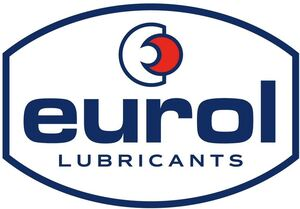

Trade Mark Journal No.2025/039 26 September 2025
WO0000001706099 (1,4)
Office of origin: Benelux Office for Intellectual Property (BOIP)
Date of International Registration:15 July 2022
Date of designation in the UK:
22 July 2025

The mark contains the colours red blue white.
- Class 1
- Chemical products for industrial and/or manufacturing purposes; chemical products namely detergents for industrial and/or manufacturing purposes and adhesives for industrial purposes only with regards to the automotive and motorcycling industry and for use in or in connection with cars and motorcycles; cleaning additives for fuels; chemical additives for fuels, lubricants and greases; chemical additives for increasing the cetane number of diesel fuel; antifreeze; antifreeze chemicals; chemical antifreeze additives for fuels; antifreeze, including for cooling systems for vehicles; de-watering fluids; degreasing preparations for use in manufacturing processes; hydraulic fluids and hydraulic and bio-hydraulic oils; brake fluids; hydraulic brake fluids; hydraulic transmission fluids; fluids for hydraulic apparatus; de-icing products; heat exchange fluids; clutch fluids; metalworking fluids [other than cutting fluids]; coolants; chemical preparations for use as solvents; preservatives for wood or metal; transmission fluids; chemical preparations for the distribution of oils, fats and petroleum; chemical preparations, namely fluids and oils for the removal of lime, brine, scale, mortar oil, grease, wax, inks, carbon, dirt, mildew, mold, grime and stains; chemical preparations for treating cooling systems; fluids for hydraulic circuits; rinsing agents for radiators; leak sealants for radiators and power steering systems for vehicles; power steering fluids; organic fluids for use in vacuum pumps; battery fluids, acidified water for batteries; the aforesaid goods exclusively in connection with the automotive and motorcycling industry and for use in or in connection with cars and motorcycles.
- Class 4
- Industrial oils and greases; lubricants; lubricating oils and greases; oils, including oils for motor vehicles, including synthetic oils for motor vehicles, semi-synthetic oils for vehicles, oils for motorcycles, tractor oils, truck oils, oils for ship engines, oil for machinery and installations, racing oils, monograde oils, diesel oils, transmission oils, gearbox oils, power steering oils, synthetic transmission oils, two stroke oils, monograde oils, mineral based oils, air conditioning oils, chainsaw oils, vacuum pump oils, gearbox oils, oils for turbines; lubricants namely hydraulic and bio-hydraulic oils; metalworking fluids in the form of oils; oils for metal treatment; cutting oils for industrial metal treatment; industrial cooling lubricants; nontoxic oils including non-toxic greases for food machinery; compressor oils, including synthetic compressor oils; non-chemical additives for fuels, lubricants and greases, chain oils; high-temperature lubricants; slideway oils; heat transfer oils; paraffinic oils; cutting oils.
Eurol B.V.
Representative: ABCOR BV, Postbus 2134, Leiden, NETHERLANDS